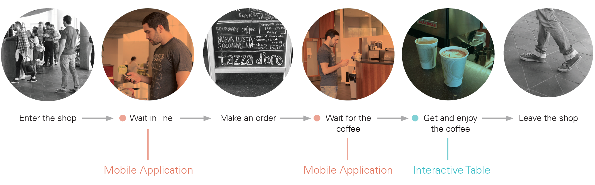

Designing for sustainability
Carnegie Mellon University
Thesis study
2013 Fall - 2014 Spring
Thesis Abstract
The loss of biodiversity is an inevitable problem that we will need to face in the near future. According to recent scientific studies, at least 10,000 species are going extinct every year. This is a serious biodiversity crisis. Despite the significant effort of the scientific community to deal with climate change, biodiversity has been rather neglected.
This thesis project presents a solution to help biodiversity-‐friendly coffee shops to build their relationship with customers through shared value, and together move towards a more biodiversity-‐friendly coffee consumption experience. The final design centers on communicating the story of coffee and biodiversity by using the interactive table and the mobile application. It seamlessly integrates information, delivering into existing coffee experience.
The final result is summarized into five design principles. Although this thesis project focuses on increasing the awareness in coffee consumption, the principles can be further applied to other issues surrounding coffee and other daily commodities.
Interested to learn more? Read the full thesis.
Stakeholders

Biodiversity and Coffee Providers: Conservation Biology and Agriculture have done the research about the coffee production and biodiversity. Their research focus is to investigate a more environmentally friendly way to plant coffee.
Biodiversity and Customers: Everyone’s daily life has more or less impact on biodiversity. Many current biodiversity solutions focus on how people can bring positive impact to the environment.
Customers and Coffee Providers: This is my focus area and it has the most potential for further development because less work has been done in this area. In order for sustainable actions to happen, it really requires the shared
It is the shared responsibility between customers and us [coffee shop]. We try our best to create a convenient environment. But at the end of the day, sustainability is all about personal responsibility.
Design approach
Based on my research findings, there are three design directions to motivate people to behave more sustainably: 1. Raise awareness, 2. Increase convenience and 3. Provide triggers.
And I started to explore what approaches that I can applied to the whole coffee consumption experience.
Four design approaches are:
1. Intrinsic and extrinsic motivations,
2. Positive feedback / encouragement,
3. Visualization of impact,
4. Convenience and clarity.
{kind=link}
Experience prototyping
The final design lives in a coffee shop and provides the information to help customers make the connection with biodiversity while drinking coffee. The process of customers who go through a coffee consumption experience in the coffee shop shows two design opportunities for interaction.
{kind=link}
Paper prototype
I would like to understand more about what and how we can embed biodiversity related information in the environment. The goals for the paper prototype in testing out the interactive table were to learn: 1. The priority of the information showed on the table. 2. Preferred ways of presenting the information. 3. Interaction among people. The paper prototype was tested with four coffee drinkers.

Final concept
The final design is to provide a biodiversity-friendly coffee experience. It seamlessly integrates information, delivering into existing coffee experience. Biodiversity-related information is presented in two types of formats:
1. Mobile application
The mobile application provides information with flexibility and accessibility. Coffee drinkers can view the information anywhere anytime. It shows customers the accumulated data of their behavior pattern and the positive impact of their sustainable coffee consumption.


2. Interactive table — Self-learning
The interactive coffee table provides biodiversity-related coffee information to customers. It creates an integrated coffee experience for people to connect the cup of coffee in their hands with the context story.


3. Interactive table — Social interaction
Moreover, customers can not only learn the knowledge through playing with the interactive table by themselves, but also sharing and connecting with their friends or other customers.